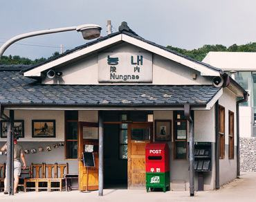
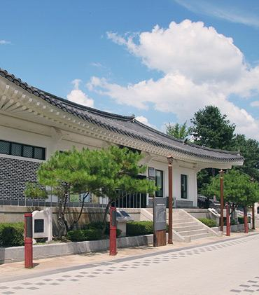
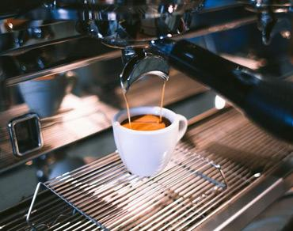
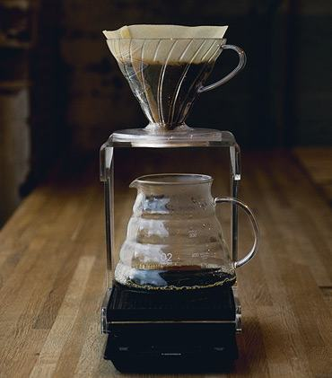
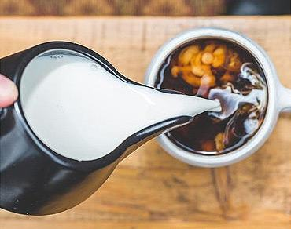
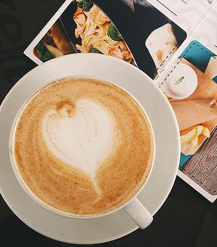
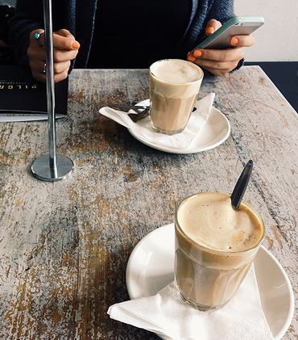
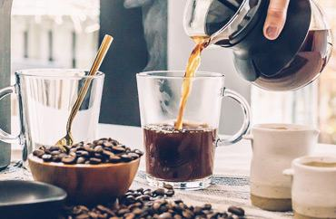

행사&이벤트
바라보다 소개
저희의 커피를 향한 사랑은 온라인에서만 머무르지 않습니다. 오히려 더 커져갑니다.
카페바가 아닌, 미스터콩의 노하우가 담긴 좋은 원두와 카페 레시피로 여러분을 오프라인에서 만나기 위해 만든 공간, 미스터콩의 카페입니다.


저희의 커피를 향한 사랑은 온라인에서만 머무르지 않습니다. 오히려 더 커져갑니다.
카페바가 아닌, 미스터콩의 노하우가 담긴 좋은 원두와 카페 레시피로 여러분을 오프라인에서 만나기 위해 만든 공간, 미스터콩의 카페입니다.
오늘 준비된 커피의 원두는 미스터콩에서도 구매하실 수 있습니다.


저희의 커피를 향한 사랑은 온라인에서만 머무르지 않습니다. 오히려 더 커져갑니다.

정겨운 시절을 만나는 시골 간이역. 서울 청량리와 경북 안동을 잇던 중앙선 열차가 다니던 능내역은, 경기도 남양주시 조안면 능내1리에 위치해 있습니다 [...]
주변관광지사계절 내내 특별하고 낭만적인 다산생태공원은 드라마 촬영지로도 사랑받는 곳입니다. 능내리 일원 16만 7천㎡ 부지에 조성된 생태공원을 거닐어보세요 [...]

다산 정약용의 마지막 여정, 마재 다산유적지. 양수리에서 팔당댐 방향으로 약 3km 지점, 마재마을에는 다산 정약용 선생의 묘와 생가터가 자리하고 있습니다 [...]

커피의 두 얼굴? 많은 사람들의 사랑을 받으며 함께 성장해온 커피이지만, 그만큼 걱정과 우려의 목소리도 늘 함께합니다. 커피와 관련된 연구와 논의는 끊임없이 이어지고 있는데요 [...]

네덜란드 사람들도 잘 모르는 더치커피 이야기. '더치'는 네덜란드 사람을 가리키는 말입니다. 17세기, 동인도회사를 세우며 세계 최고의 무역국가로 떠올랐던 그들의 이야기 [...]

커피와 낮잠의 콜라보레이션. Coffee nap은 커피를 마신 후 바로 20분 미만의 짧은 낮잠을 자는 것을 뜻합니다. 2014년 영국 러프버러 수면연구센터의 실험 결과가 그 시작이었죠 [...]

프랑스의 아침을 깨워온 그 맛과 향. 에스프레소가 나오기 전부터 지금까지, 카페오레는 프랑스의 가장 대중적인 아침 식단 중 하나로 사랑받아 왔습니다 [...]

커피, 문화와 소통의 발전에 기여하다! 카페는 단순히 커피만 마시고 일어서는 장소가 아닙니다. 사람과 사람, 사람과 공간이 교감하는 자리이기도 합니다 [...]

GOOD TO THE LAST DROP, 마지막 한 방울까지 맛있다. 맥스웰하우스의 대표 캐치프레이즈로 알려진 이 말은, 루즈벨트 대통령이 커피를 마신 후 남긴 감탄이었다고 전해집니다 [...]
사람, 그리고 추억, 그리고 커피. 모든 것이 함께 추억이 되는 공간을 바라보다.